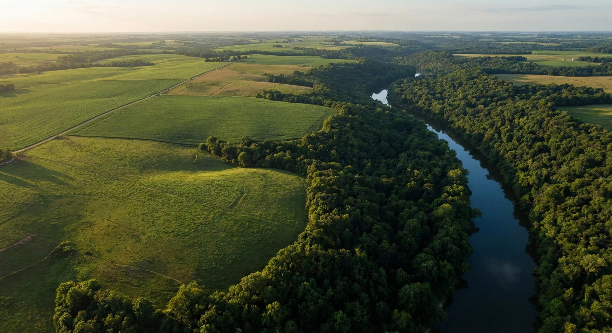
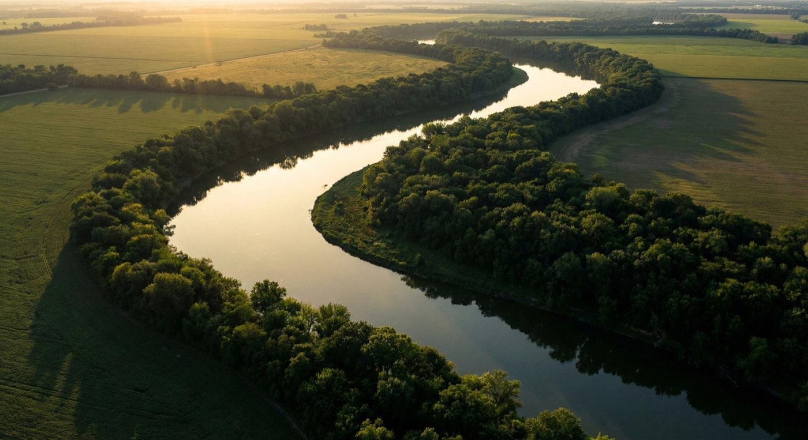
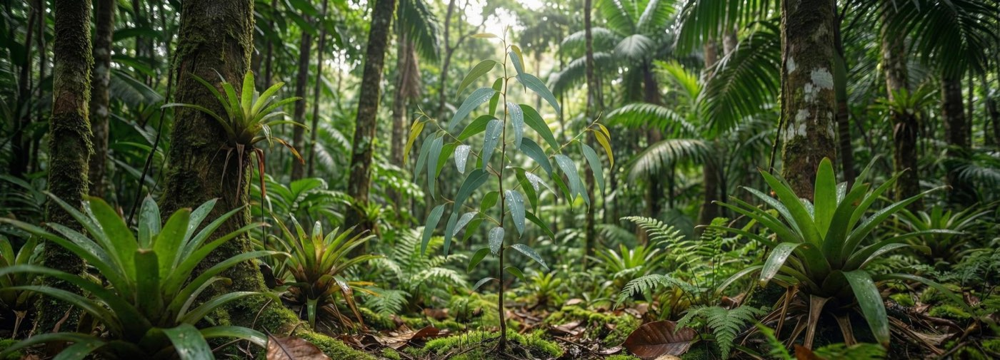
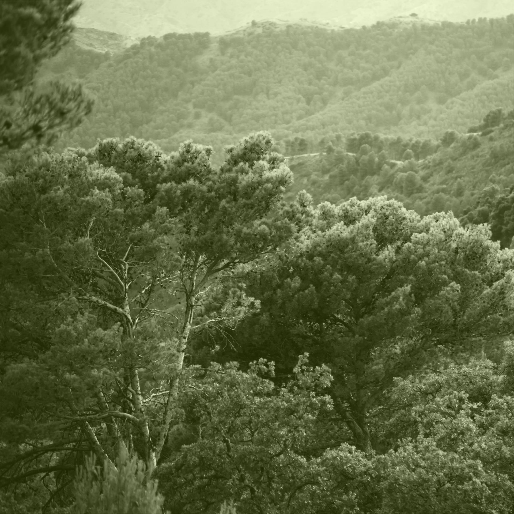

Regularização
Cadastro Ambiental Rural
Regularize sua propriedade no CAR com agilidade, precisão cartográfica e segurança jurídica.
Solicitar orçamentoConsultoria Ambiental · Mato Grosso
CAR, licenciamentos, laudos e consultoria especializada para propriedades rurais e empresas.
Resposta no mesmo dia
Propriedades atendidas
Hectares regularizados
Municípios atendidos
Anos de experiência
O que fazemos
Soluções técnicas completas para regularização e gestão ambiental da sua propriedade.

Regularize sua propriedade no CAR com agilidade, precisão cartográfica e segurança jurídica.
Solicitar orçamento
Identificação e caracterização técnica das formações vegetais presentes na propriedade.
Solicitar orçamento
Mapeamento e análise técnica dos recursos hídricos e áreas de preservação permanente.
Solicitar orçamento
Projetos de reflorestamento produtivo com espécies adequadas ao solo e clima da sua região.
Solicitar orçamentoObtenha suas licenças ambientais com segurança técnica e conformidade com a legislação vigente.
Solicitar orçamentoOrientação técnica especializada para decisões ambientais estratégicas e conformidade legal.
Solicitar orçamentoQuem somos
A Gaia Soluções Ambientais nasceu da convicção de que produção rural e responsabilidade ambiental não são opostos — são aliados. Atuamos no Mato Grosso oferecendo consultoria técnica especializada para produtores rurais e empresas que precisam regularizar, gerir e preservar seus ativos ambientais.
Nossa equipe une experiência de campo com rigor técnico e profundo conhecimento da legislação ambiental brasileira. Cada propriedade atendida recebe uma solução sob medida — não um processo padronizado.
Responsabilidade que Transforma.

Nossa metodologia
Do contato inicial à entrega final, cada etapa é conduzida com transparência, rigor técnico e responsabilidade.
Entendemos a situação atual da propriedade e identificamos as necessidades de regularização e gestão ambiental.
Definimos o escopo, os documentos necessários e o cronograma de execução de forma clara e transparente.
Nossa equipe técnica realiza visitas e coleta todos os dados necessários diretamente na propriedade.
Elaboramos os documentos, laudos e projetos com rigor técnico e dentro dos prazos acordados.
Acompanhamos todo o processo junto aos órgãos competentes e seguimos disponíveis após a entrega.
Cada propriedade tem sua história. Conheça projetos que a Gaia conduziu do diagnóstico à regularização completa em todo o Mato Grosso.
“Encontrei na Luminae um acompanhamento muito mais completo do que eu esperava. A consulta foi cuidadosa, estratégica e realmente olhou para minha rotina como um todo.”
“Gostei da forma como tudo foi explicado com clareza. Os exames, a estratégia nutricional e o acompanhamento fizeram diferença na minha evolução.”
“A equipe me passou muita segurança desde o primeiro contato. Senti que cada decisão foi tomada com base em ciência, cuidado e atenção aos detalhes.”
Pronto para regularizar?
Atendemos propriedades rurais e empresas em todo o Mato Grosso. A primeira conversa é gratuita.
Solicitar orçamento gratuito